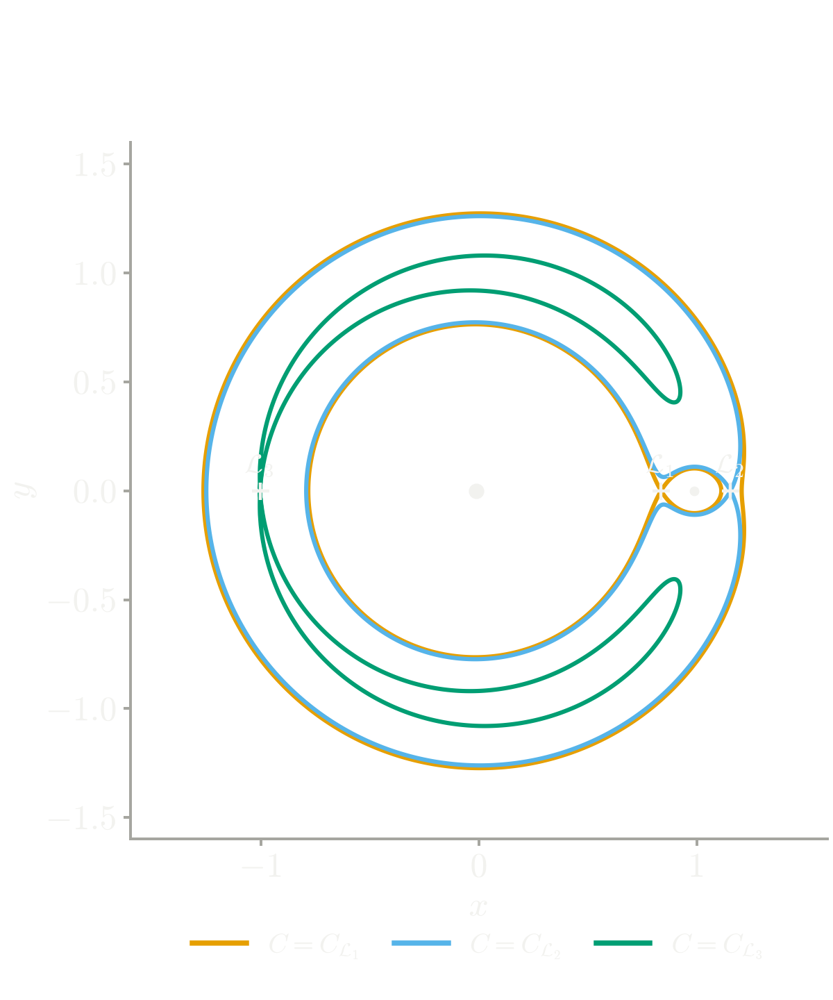
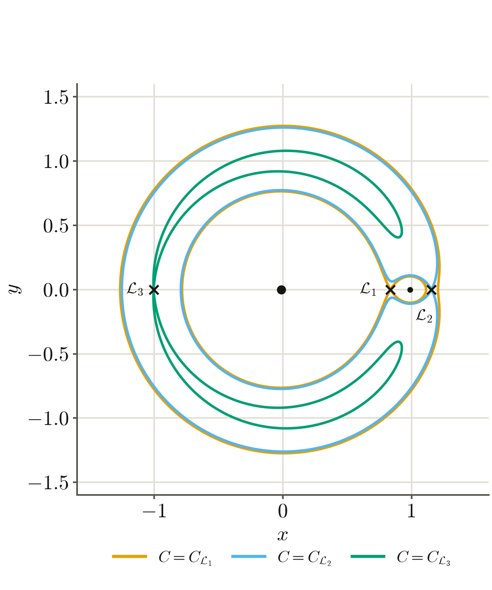
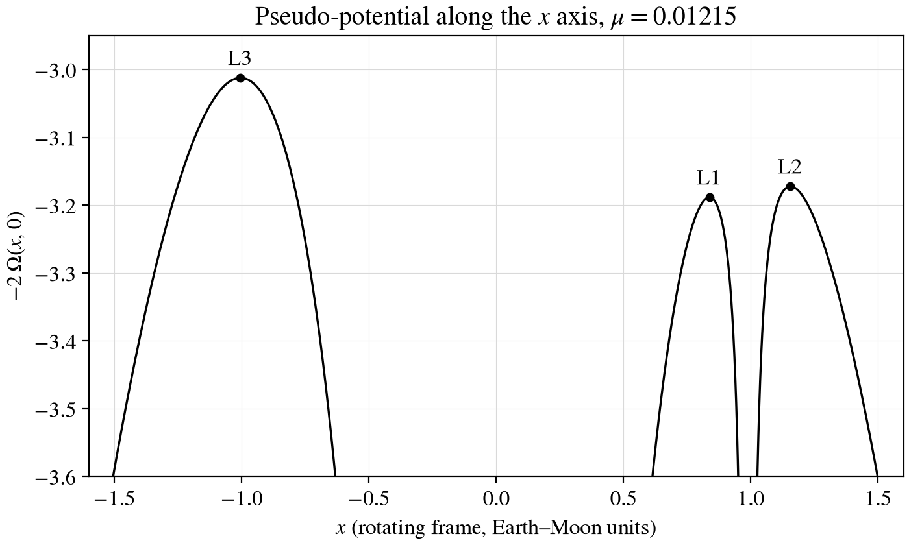

At a given Jacobi constant \(C = 2U - v^2\), the motion is confined to the Hill region.
The collinear points \(L_1\) and \(L_2\) are saddles, with one unstable direction each.
L2Moon
Szebehely, Theory of Orbits, 1967, chapter 1.
L1L2Moon
The Lyapunov families about L1 and L2
Planar Lyapunov orbits about L1 and L2, continued from the linear seed. Each member is traced at the pace of its period, hence the inner ones are complete first.
Period of the families
The period of the smallest members is close to the linear period of the libration point.
The period of a member is longer at a larger amplitude.
The larger members are bent toward the Moon, where the continuation is stopped in this drawing.
L1L2Moon
Hénon, Generating Families in the Restricted Three-Body Problem, 1997.
Figures and math
A figure in the zone
A figure exported with the matplotlib styles of the template is shown without a frame.
Export one file per mode and mark them for-dark and for-light.
Give a white raster figure the class paper to frame it.
Give a black-on-white line plot the class invert to invert it in dark mode.


Zero-velocity curves at the Jacobi constants of L1, L2, and L3.

A white figure, framed as paper
A raster figure from a paper keeps its white background, framed with the paper class.
EarthMoon
A low-energy transfer through L1
A flight from a perigee along the stable manifold of an L1 Lyapunov orbit, once around the orbit, and along its unstable manifold to a close pass of the Moon.
EarthMoon
The tubes of an L1 orbit
The unstable tube of an L1 Lyapunov orbit toward the Earth, in orange, and its mirror image, the stable tube, in violet.
The black panel of the group deck
In the PowerPoint deck of the group, the words are on a black panel beside a white figure. The panel is black in the light mode too.
The split layout.
Tycho on a slide
A tycho scene is embedded as an inline viewer.
The mode of the deck is passed to the viewer through its theme attribute.
The scene is played only while its slide is shown, and the keys of the viewer are active only while it is in focus.
The function build_embed of pytycho returns the element for pasting into a slide.
Written into this file with demo/tycho-scene.py.
The effective potential
Its parts are the wells and the centrifugal bowl:
\[U_g = -(1-\mu)/\rho_1 - \mu/\rho_2,\]
\[U_c = -(x^2 + y^2)/2,\]
\[\tilde U = U_g + U_c.\]
Its extrema are the libration points \(\mathcal L_1\) to \(\mathcal L_5\): three saddles and two maxima.
The cut at \(-C/2\) is the zero-velocity curve, the boundary of Hill's region, where \(-2\tilde U \ge C\).